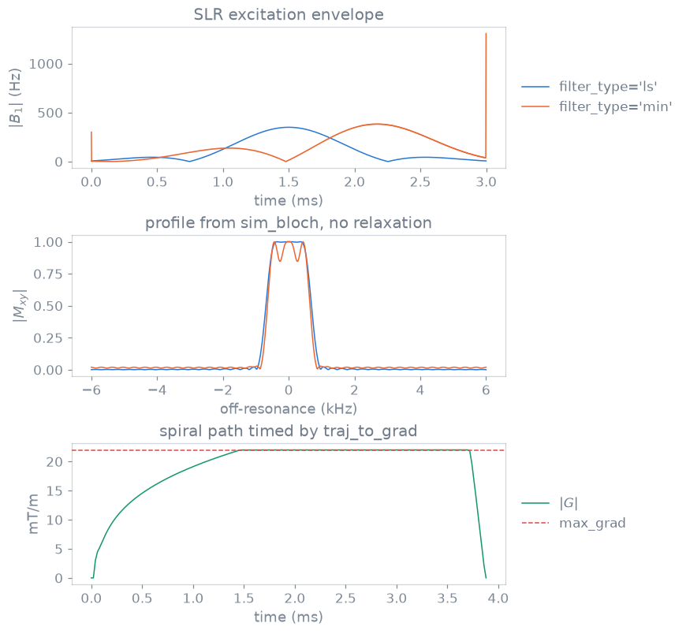

RF and gradient design internals#
The rules, units and algorithms behind the designers. The concepts are in RF and gradient design.

Linear-phase and minimum-phase SLR excitations of time-bandwidth product 4 and
duration 3 ms, their profiles from sim_bloch, and a spiral timed by
traj_to_grad at 22 mT/m and 150 T/m/s.#
Units and rasters#
RF amplitudes are in Hz, frequency offsets in Hz, phase offsets in rad, flip
angles in rad and durations in s. B1 amplitudes that are inputs of the B1
designers are in T, and the returned events are in Hz. Gradient amplitudes are
in Hz/m, slew rates in Hz/m/s and k-space in 1/m, on the channel axes. RF
samples lie on the RF raster (dwell, the system’s rf_raster_time when
zero) and gradient waveforms on the gradient raster. make_wave_gradients
takes its amplitude in T/m. The solver behind traj_to_grad works internally in
Hz per pixel and its output is converted before it is returned.
Shinnar-Le Roux designs#
make_slr_pulse() follows SigPy’s sigpy.mri.rf.slr and
sigpy.util.leja, and through SigPy Pauly’s rf_tools; the SLR design is in
pypulseqpp._slr in NumPy and SciPy, and the exhaustive root-flip search in
pypulseqpp._ext.slr (BSD 3-Clause, LICENSES/SigPy-BSD-3-Clause.txt).
Parameter |
Values |
|---|---|
|
|
|
|
The passband and stopband ripples are converted per pulse type before the
filter is designed: ex uses \(\delta_1 \to \sqrt{\delta_1/2}\) and
\(\delta_2 \to \delta_2/\sqrt{2}\), se \(\delta_1/4\) and \(\sqrt{\delta_2}\),
inv \(\delta_1/8\) and \(\sqrt{\delta_2/2}\), and sat \(\delta_1/2\) and
\(\sqrt{\delta_2}\). A duration that spans fewer than four RF samples is refused.
Effective centre. center_pos, in \([0, 1]\) of the duration, is the centre
the event records and the point the slice-select rephaser refocuses from. It
defaults to the magnitude peak of the designed waveform, as
calc_rf_center() finds it. A minimum-phase pulse is used at
center_pos=1.0, its own end. The rephaser area follows from the centre, and
so does the echo time a readout module measures from it.
Root flipping. With root_flip=True the roots of the SLR beta polynomial
are flipped to minimise the peak B1 for the same profile magnitude (Sharma,
Lustig and Grissom, 2016); the profile phase is then no longer linear.
It needs a
pulse_typewith a nominal flip, so a small-tip pulse is refused.It is refused together with
cancel_alpha_phase.It visits every subset of the passband’s roots, \(2^n\) patterns, and refuses a passband with more than 30 candidates.
The compiled search selects the pattern an exhaustive NumPy search selects, and does not depend on the number of threads sharing it.
The roots are Leja-ordered, a permutation that starts from the largest.
The pulse plays at its designed amplitude scaled by
flip_angleover the nominal flip, not by area. A design of more than 256 samples is searched at 256 samples and resampled, so it keeps the coarse design’s profile.
Related designs.
Function |
Rule |
|---|---|
One pulse per segment with flips that grow to 90 degrees at the last, so each excites the same transverse magnetisation of non-recovering magnetisation; with |
|
The envelope is multiplied by \(\sum_b w_b e^{2\pi i f_b t}\) with \(t\) from the start of the shape, so band phases are referenced to the start, not the centre. Offsets always include 0 Hz; for an even band count the unpaired band is on the positive side. Sideband power is power: weights take its square root. Phase schedules: |
|
An SLR envelope on an alternating gradient that ends balanced; a slab too thin for the slew lengthens its ramps only as far as the slew needs, and one the hardware cannot do is refused. |
|
Small-tip design on a centre-out spiral, each interleaf followed by an RF-off retrace to the origin, arc-length weighting without a radial density factor, so no rephaser is needed. |
Adiabatic pulses#
make_adiabatic_pulse() builds hypsec (Baum, Tycko and
Pines 1985) and wurst (Kupce and Freeman 1995) through PyPulseq’s factory,
and bir4 (Staewen et al. 1990) and goia_wurst (Andronesi et al. 2010)
itself. For every sweep the amplitude meets adiabaticity where the frequency
sweep crosses zero:
bir4rotates byflip_anglethrough the phase jumps between the quarters of two BIR-1 halves, withkappashaping \(\tan(\kappa s)/\tan\kappa\) over each quarter; it selects no slice and refuses a gradient.goia_wurstmodulates its gradient with the sweep, so every position in the slice sees the same adiabaticity: \(G/G_{\max} = (1 - m) + m\,|\cos(\pi t/T)|^{p}\) with \(G_{\max} = \mathtt{bandwidth}/\mathtt{slice\_thickness}\), \(m\) =gradient_modulationand \(p\) =gradient_order. It requiresreturn_gzand a positiveslice_thickness, and starts no earlier than its gradient’s ramp ends.BIR-4 and GOIA-WURST are referenced to zero phase at the crossing and use a multiple of four samples, zero-padded to
duration; fewer than eight samples is refused. The WURST truncation \(1 - |\cos(\pi t/T)|^{n}\) has \(n\) = 40 forwurstand 16 forgoia_wurst.make_half_passages()returnsdown, the first half of a sweep, andup,downtime-reversed and conjugated, so the phase accrued on the way down unwinds on the way up. The defaultadiabaticityis 8, twice an inversion’s, because a half passage has half a sweep to converge in.
B1-encoding pulses#
make_bloch_siegert_pulse() plays a constant amplitude with
its frequency swept from far off resonance towards it and back, symmetric
about the centre. Longitudinal magnetisation stays on \(z\) and transverse
magnetisation gains a phase proportional to \(B_1^2\) (Khalighi, Rutt and Kerr,
Magn Reson Med 70:829, 2013); playing the sweep on either side of resonance
and differencing the phases maps B1. duration is rounded to an even number
of RF samples. The sweep \(\gamma B_1 t/k\) must stay below one over half the
pulse, or the design is refused. The preparation module plays it alone in its block, unspoiled. make_b1_selective_pulse(),
make_b1_gslider_pulse() and
make_b1_hadamard_pulse() take the amplitude in T and a
relative passband.
Parallel transmit#
A dynamic pTx pulse is one arbitrary RF event holding every transmit channel’s waveform one after another over a shared time base, so its time shape restarts once per channel (Roos et al., Magn Reson Med 2025, doi:10.1002/mrm.30601).
The channel count is the number of samples at the first sample time, as the reference interpreter reads it, and is accepted only when the times are that many identical copies; anything else is one channel. The rule is
rf_channelsinsrc/cpp/pulseq/channels.hpp.make_ptx_pulse()writes the layout from(channels, samples)complex waveforms in Hz, played as given: nothing is scaled to a flip angle, since with several channels the flip depends on each channel’s B1 map.split_ptx_pulse()reads it back.shape_duris one channel’s duration, so an interpreter unaware of the layout reads the right length, and the core’s timing check judges one channel’s time base. A waveform that is not two-dimensional, holds no samples or has a time base that does not repeat is refused.Flip-angle integrals take each channel on its own time base and sum them, the flip where every channel has unit, in-phase sensitivity. RF power sums \(|b_c|^2\) over the channels at each time.
The pulse centre defaults to the peak of the root sum square of the channels’ magnitudes. The bandwidth is that of the sum of the channels.
The layout survives writing and reading, and upstream reads the same channels.
RF shim. make_rf_shim() creates the rf_shim extension
event, complex weights one per channel, stored as complex128; a block
carries at most one, and blocks shimmed alike share one library row.
calc_rf_shim() fits magnitude least squares of
\(\sum_c w_c b_{1,c}\) over a mask with free phase, with optional Tikhonov
weight on \(\sum|w|^2\), starting from the channel combination that delivers the
most field over the mask and stopping at a relative cost change of
tolerance or after rounds phase exchanges. The B1+ maps may be in any unit
shared by all channels.
Spokes and 2D-selective pTx. The design kernels, in
src/cpp/bindings/ptx.cpp, follow SigPy’s sigpy.mri.rf.ptx and shim
(BSD 3-Clause): the spatial-domain method of Grissom et al. (Magn Reson Med
56:620, 2006) solved by conjugate gradients with magnitude-least-squares phase
updates, and greedy spoke selection (Grissom et al., Magn Reson Med 68:1553,
2012). make_spokes_pulse() plays one small-tip SLR
sub-pulse per lobe of an alternating slice gradient, with in-plane blips
between lobes; one spoke sits at the k-space centre, candidate positions span
1 / resolution at a pitch of 1 / fov, and the per-channel weight of each
spoke is fitted to a uniform flip_angle over the mask. The b1_maps are
relative, a map of ones being nominal amplitude; the model is the small-tip
approximation.
Bloch simulation#
sim_bloch() rotates the magnetisation in each hard-pulse
step right-handedly about \((\mathrm{Re}\,b_1, \mathrm{Im}\,b_1, b_z)\) by
\(2\pi\,\Delta t\) times that vector’s length. There is no relaxation. Each
position’s steps compose as SU(2) elements in src/cpp/bindings/sim.cpp and
are converted to one rotation at the end, over a worker per chunk of
positions.
Argument |
Shape and unit |
|---|---|
|
\((T,)\) shared or \((P, T)\) per position, complex, Hz |
|
\((P, T)\), or \((P, 1)\) held throughout, Hz; its rows define the positions |
|
step, s |
|
\((3,)\) or \((P, 3)\), \(+z\) by default |
The result is \((P, 3)\); fields whose shapes disagree on positions or steps are
refused. sim_rf() follows MATLAB Pulseq’s simRf as a
quaternion composition, with no selection gradient, so frequency maps to
position only for a constant selection gradient; it returns \(M_z\),
\(M_x + iM_y\) from \(+z\), \(+x\) and \(+y\), the frequency axis and a complex
refocusing efficiency whose phase is twice the azimuth of the refocusing axis.
A ppm offset on the pulse is read against the default system’s gamma and
\(B_0\), with a warning.
Arbitrary gradients from a k-space path#
traj_to_grad() takes a path as geometry, time last: shape
\((n,)\), \((2, n)\) or \((3, n)\) in 1/m, and returns the gradient in Hz/m and the
slew rate in Hz/m/s. By default MRArbGrad (Luo, Huang, Miao, Xu, Hu and Qi,
IEEE Trans Biomed Eng 2026) finds the gradient that traces it in least time
without leaving the vector amplitude and slew limits anywhere along it:
the output length differs from the input’s, and resampling the same path does not change the gradient;
oversamplingis the path-resampling factor the solver works at, andstart_at_zeroandend_at_zeroramp the waveform from and to zero;the solver works in three dimensions, so a single axis rides in one of a pair and the requested dimensions are returned;
with
time_optimal=Falsethe samples already lie on the raster and are differentiated, as upstream does, with no limit enforced; the slew is averaged back onto the gradient samples and the output is one gradient sample shorter than the path.
calc_spiral_trajectory() and
calc_rosette_trajectory() return geometry only, a polyline
with no time parameterisation; make_arbitrary_grad wraps one axis of the
result as an event. calc_ramp is a separate minimum-time connection of two
k-space points under a fixed raster.
The vendored solver. external/MRArbGrad is a submodule of a fork of
RyanShanghaitech’s MRArbGrad, MIT licensed, pinned to one commit. Three of
its files are compiled (mag/Mag.cpp, utility/global.cpp,
utility/v3.cpp) and the rest is headers pulled in by
src/cpp/bindings/arbgrad.cpp, the binding pypulseqpp._ext.arbgrad; its own
Python package is not built. The shot ordering and rotation a scan replays a
base arm under are Python policy. A constant-pitch spiral needs no
separate trajectory, since the variable-density one reduces to
\(\rho = k_{\rho\phi}\,\phi\) when its two shape parameters are equal.
tests/test_arbgrad_spiral.py reports whether the waveforms moved after the
submodule is bumped; see external/NOTICE.md.
The designers compute events and profiles from a model, and the checks of Safety checks read the events as played. A simulated profile does not establish how a pulse behaves on a scanner.